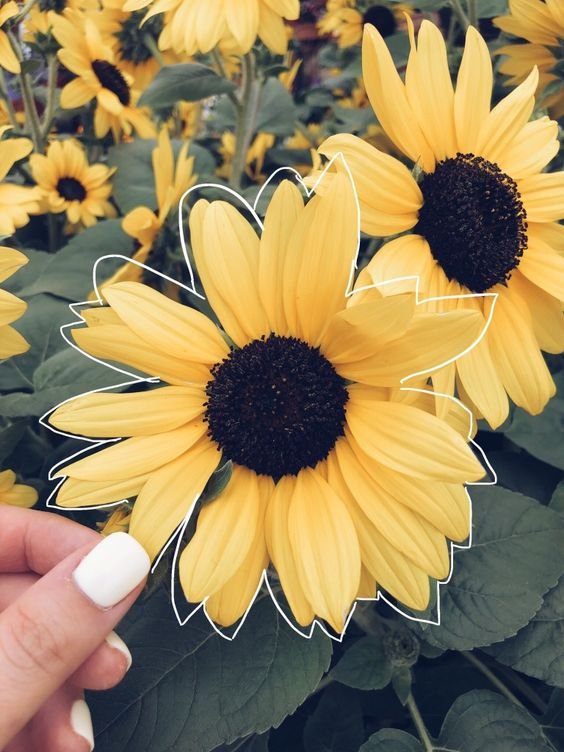

¡La primavera ha llegado!
Querido amiga,
En esta temporada de renacimiento y florecimiento, quiero expresar mi aprecio por tu amistad y la alegría que compartimos. Estas flores amarillas son un símbolo de nuestra relación especial.
Con cariño,
EQUIPO DUIS